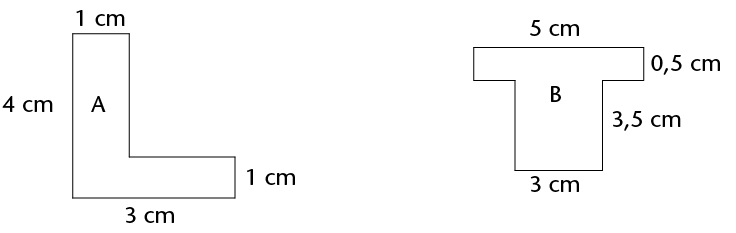
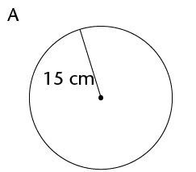
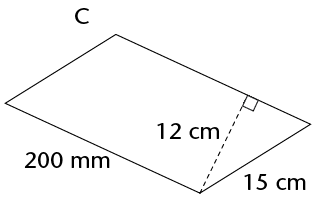
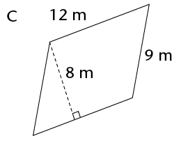
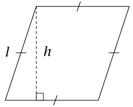
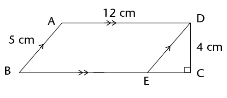
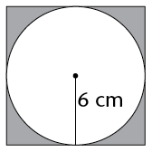
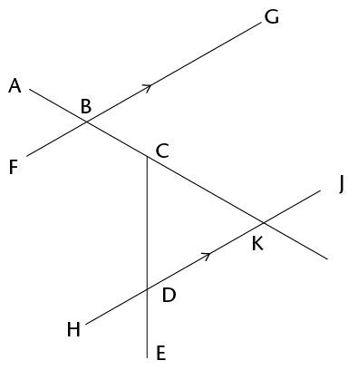

14
Area and perimeter of 2D shapes
In this chapter, you will
revise how to calculate the perimeter and area of
squares, rectangles, triangles and circles. The perimeter of a
shape is the distance all the way around the sides of the shape.
The area of a shape is the flat space inside the shape. You
will also learn how to calculate the areas of parallelograms,
rhombi, kites and trapeziums, as well as investigate the effect
on the perimeter and area of a shape when its dimensions are
doubled.
14.1 Area and perimeter of squares and rectangles
revising
concepts
- Each block in figures
A to F below measures 1 cm \(\times\) 1 cm. What is the perimeter
and area of each of the figures? Complete the table below.
The perimeter
(P) of a shape is
the distance along the sides of the shape. The area
(A) of a figure is
the size of the flat surface enclosed by the figure.

|
Figure
|
Perimeter
|
Area
|
Number of 1 cm \(\times\)
1 cm squares
|
|
A
|
|
|
|
|
B
|
|
|
|
|
C
|
|
|
|
|
D
|
|
|
|
|
E
|
|
|
|
|
F
|
|
|
|
|
G
|
|
|
|
|
H
|
|
|
|
- Consider the rectangle
below. It is formed by tessellating identical squares that are
1 cm by 1 cm each. The white part has squares that are
hidden.
To tessellate means to
cover a surface with identical shapes in such a way that
there are no gaps or overlaps. Another word for tessellating
is tiling.
- Write down, without counting, the total
number of squares that form this rectangle, including those
that are hidden.
Explain your reasoning.
- What is the area of the rectangle,
including the white part?
Area of a rectangle =
length \(\times\) breadth = \(l \times b \)
Area of a square = \(l
\times l = l^{2}\)
Both length (l) and breadth (b) are expressed in the same
unit.
Sipho and Theunis each
paint a wall to earn some money during the school holidays.
Sipho paints a wall 4 m high and 10 m long. Theunis's wall is 5
m high and 8 m long. Who should be paid more? Explain.
What is the area of a square
with a length of 12 mm?
The area of a rectangle is 72
cm2 and its length
is 8 cm. What is its breadth?
14.2 Area and perimeter of composite figures
breaking up figures
and putting them back together again
- The diagram on the left below
shows the floor plan of a room.
- We can calculate the area of the room by
dividing the floor into two rectangles, as shown in the diagram
on the right below.

Area of the room = Area of yellow rectangle
+ Area of red rectangle
\(= (l \times b) + (l \times b)\\
= (14 \times 9) + (15 \times 8)\\
= 126 + 120\\
= 246 \text{m}^{2}\)
- The yellow part of the room has a wooden
floor and the red part is carpeted. What is the area of the
wooden floor? What is the area of the carpet?
- Calculate the area of the room using two
different shapes. Draw a sketch.

Calculate the area of the
figures below.

Which of the following
rules can be used to calculate the perimeter (P) of a
rectangle? Explain.
- Perimeter
\(= 2 \times (l + b) \)
- Perimeter
\( = l + b + l + b \)
- Perimeter
\( = 2l + 2b \)
-
Perimeter \( = l + b \)
l and b refer to the length and
the breadth of a rectangle.
The following are
equivalent expressions for perimeter:
\(P = 2l + 2b \) and \(P-2(l + b)\) and \(P = l + b +l+b\)
Check with two classmates that the rule or rules you have chosen abover are correct ;then apply it to calculate the perimeter of figure A. Think carefully!
The perimeter of a rectangle is 28 cm and its breadth is 6 cm. What is its length?
14.3 Area and perimeter of circles
revising concepts
from previous grades
The perimeter of a circle is called
the circumference of a circle. You will remember the
following aboutcircles from previous grades:
- The
distance across the circle through its centre is called the
diameter (d) of the circle.
- The
distance from the centre of the circle to any point on the
circumference is called the radius (r).
-
The
circumference (c) of a circle divided by its
diameter is equal to the irrational value we call pi
\((\pi)\). To simplify calculations, we often use the
approximate values 3,14 or \(\frac{22}{7}\)
The following are important
formulae to remember:
- \(d = 2 \pi r\) and \(r= \frac{1}{2}d\)
- Circumference of a circle \((c) = 2 \pi r \)
- Area of a circle \( (A) = \pi r^{2}\)
circle calculations
In the following calculations, use
\(\pi\) = 3,14 and round off your answers to two decimal
places. If you take a square root, remember that length is
always positive.
- Calculate the perimeter and
area of the following circles:
- A circle with a radius of 5 m
- A circle with a diameter of 18 mm
Calculate the radius of a
circle with:
- a circumference of 53 cm
- a circumference of 206 mm
Work out the area of the
following shapes:

Calculate the radius and
diameter of a circle with:
- an area of 200 m2
- an area of 1 000 m2
Calculate the area of the
shaded part.
14.4 Converting between units
converting between units used for perimeter and area
Always make sure that you use the
correct units in your calculations. Practise the conversions
below.
Remember:
1 cm = 10 mm 1 mm = 0,1 cm
1 m = 100 cm 1 cm = 0,01 m
1 km = 1 000 m 1 m = 0,001
km
- Convert the following:
- 34 cm = .......... mm
- 501 m = .......... km
- 226 m = .......... cm
- 0,58 km = .......... m
- 1,9 cm = .......... mm
- 73 mm = .......... cm
- 924 mm = .......... m
- 32,23 km = .......... m
Remember, to convert between square
units, you can use method shown below:
To convert cm2 to m2:
1 cm \(\times\) 1 cm
=0.01 m \(\times\) 0.01 m
=0.0001 m2
Example:
Convert 50 cm2to m2
1 cm2 = 0,0001 m2
50 cm2 = 50 \(\times\)
0,0001 m2
= 0,005 m2
- Convert to cm2:
- 650 mm2
- 1 200 mm2
- 18 m2
- 0,045 m2
- 93 mm2
- 177 m2
- Convert 93 mm2 to m2
- Convert 0,017 km2 to m2
14.5 Area of other quadrilaterals
parallelograms
As shown below, a parallelogram can
be made into a rectangle if a right-angled triangle from one
side is cut off and moved to its other side.

So we can find the area of a
parallelogram using the formula for the area of a
rectangle:
Area of rectangle \(= l \times b\)
= (base of parallelogram) \(\times\)
(perpendicular height of parallelogram)
Area of parallelogram = Area of
rectangle
\(\therefore\) Area of
parallelogram = base \(\times\) perp. height
We can use any side of the
parallelogram as the base, but we must use the perpendicular
height on the side we have chosen.
-
- Copy the parallelogram above into your exercise book.
- Using the shorter
side as the base of the parallelogram, follow the steps above
to derive the formula for the area of a parallelogram.
Work out the area of the
following parallelograms using the formula.



Work out the area of
the parallelograms. Use the Theorem of Pythagoras to calculate
the unknown sides you need. Remember to use the pre-rounded
value for height and then round the final answer to two decimal
places where necessary.



rhombi
A rhombus is a parallelogram with all
sides equal.
In the same way we derived the formula for the
area of a parallelogram, we can show the following:
Area of a rhombus = length
\(\times\) perp. height

- Work in your exercise
book. Show how to derive the formula for the area of a
rhombus.
- Calculate the areas of
the following rhombi. Round off answers to two decimal places
where necessary.


kites
To calculate
the area of a kite, you use one of its properties,namely that
the diagonals of a kite are perpendicular.
Area of kite DEFG = Area of
\(\triangle\)DEG + Area
of \(\triangle\)EFG
= \(\frac{1}{2}(b \times h) + \frac{1}{2}(b \times h)\\
= \frac{1}{2}(EG \times OD) + \frac{1}{2}(EG \times OF)\\
= \frac{1}{2} EG(OD+OF)\\
=\frac{1}{2} EG \times DF \)
Notice that EG
and DF are the diagonals of the kite.
\(\therefore\) Area of a
kite = \(\frac{1}{2}\) (diagonal 1 \(\times\) diagonal 2)
- Calculate the area of kites
with the following diagonals. Give your answers in m2
- 150 mm and 200 mm
- 25 cm and 40 cm
Calculate the area of the
kite.
trapeziums
A trapezium has two parallel sides.
If we tessellate (tile) two trapeziums as shown in the diagram
below, we form a parallelogram. (The yellow trapezium is the
same size as the blue one. The base of the parallelogram is
equal to the sum of the parallel sides of the trapezium.)

We can use the formula for the area
of a parallelogram to work out the formula for the area of a
trapezium as follows:
Area of parallelogram = base \(\times\)
height = (side 1 + side 2) \(\times\) height
Area of trapezium = \(\frac{1}{2}\) area of parallelogram = \(\frac{1}{2}\)(side 1 + side 2) \(\times\) height
\(\therefore\) Area of a
trapezium = \(\frac{1}{2}\) (sum of parallel sides) \(\times\) perp.
height
Calculate the area of the following
trapeziums:

areas of composite shapes
- Calculate the areas of the following
2D shapes. Round off your answers to two decimal places where
necessary.
- 


14.6 Doubling dimensions of a 2D shape
Remember that a 2D shape has two
dimensions, namely length and breadth. You have used lengths
and breadths in different forms, to work out the perimeters and
areas of shapes, for example:
- length and
breadth for rectangles and squares
- bases and
perpendicular heights for triangles, rhombi and
parallelograms
- two
diagonals for kites.
Doubling means to multiply by
2.
But how does doubling one or both of
the dimensions of a figure affect the figure's perimeter and
area?
The four sets of figures on the next page are
drawn on a grid of squares. Each row shows an original figure,
the figure with one of its dimensions doubled, and the figure
with both of its dimensions doubled. Each square has a side of
1 unit.
- Work out the perimeter
and area of each shape. Round off your answers to two decimal
places where necessary.
- Which
figure in each set is congruent to the original figure?
- Fill in the perimeter
(P) and area (A) of each figure in the table
below.
|
|
|
|
|
A
|
P =
A =
|
P =
A =
|
|
B
|
P =
A =
|
P =
A =
|
|
C
|
P =
A =
|
P =
A =
|
|
D
|
P =
A =
|
P =
A =
|
- Look at the completed table
above. What patterns do you notice? Choose one:
- When both
dimensions of a shape are doubled, its perimeter is
doubled and its area is doubled.
-
When both
dimensions of a shape are doubled, its perimeter is
doubled and its area is four times bigger.

- Write down
the formulae for the following:
|
Perimeter of a square
|
|
|
Perimeter of a rectangle
|
|
|
Area of a square
|
|
|
Area of a rectangle
|
|
|
Area of a triangle
|
|
|
Area of a rhombus
|
|
|
Area of a kite
|
|
|
Area of a parallelogram
|
|
|
Area of a trapezium
|
|
|
Diameter of a circle
|
|
|
Circumference of a circle
|
|
|
Area of a circle
|
|
-
Calculate the perimeter of the square and the area of the shaded parts of the square.

Calculate the area of the kite.

Term 2 Revision
and assessment
Revision
Remember to show all your steps of
your working. Note that the diagrams drawn in this revision and
assessment are not drawn to scale.
construction of geometric
figures
Do not erase any construction
arcs in these questions.
- Construct and label the
following triangles and quadrilaterals:
- Triangle FGH where GH = 6,2 cm;
\(\hat{G}\) = 36\(^\circ\) and \(\hat{H}\) = 63\(^\circ\)
- Parallelogram PQRS where PQ = 5,7 cm, PS
= 7,8 cm and \(\hat{R}\) = 112\(^\circ\)
- Construct \(\triangle\)KLM where KL = 9,4 cm; LM = 7 cm and MK = 7,8 cm.
- Construct the
perpendicular bisectors of all three sides of the triangle
drawn in part (a). You should find that they all go through the
same point.
- Use the point of intersection as the
midpoint of a circle that passes through all three vertices of
the triangle. Use your compass to draw this circle.
Construct the following angles
without using a protractor:
- 45\(^\circ\)
- 210\(^\circ\)
Construct a regular hexagon in
your exercise books by following these instructions:
- Construct
a horizontal line, AB, which is 2 cm long.
- Set your
compass to 2 cm, and from each of A and B, draw an arc above
line AB. Call the point that the arcs intersect O.
- Draw a
circle of radius 2 cm, centred on O. It should go through A
and B.
- Place the
compass on point B, and draw an arc crossing the circle on
the side opposite to A. Call this point C.
- Repeat the
above step to create points D to F.
- Join B to
C with a straight line. Repeat with C to D, and so on, until
you get back to point A. You have now constructed a regular
hexagon!
geometry of 2D shapes
- The following table summarises the properties of diagonals of quadrilaterals. Complete the table by placing ticks in the appropriate blocks.
|
|
|
|
|
|
|
|
Diagonals bisect each
other
|
|
|
|
|
|
|
|
Diagonals cut at right
angles
|
|
|
|
|
|
|
Study the following
figure.
Note that \(d\), \(e\) and \(f\) are the exterior angles of the
triangle.

- Write down an equation that shows the
relationship between angle d and the sum of two other
angles in the image.
- Determine the size of d + e + f. Give reasons for your
answer.
- Determine the size of
\(\hat{V}\). Show all steps of your working and give
reasons when using any geometrical theorem:
- DEFG is a square with
DF = 12 cm. Determine the length of the side of the square,
correct to two decimal places. Show all steps of your working.
Give reasons when using any geometrical theorem:
- Are the following
pairs of triangles congruent? If they are, write down the
relationship in the form \(\triangle\)XYZ \(\equiv\) \(\triangle\)ORQ, where X corresponds with O, Y with R, and so
on. Also state the congruency condition (case) that proves the
two triangles are congruent (for example, sss). If they are not
congruent, explain why they are not congruent.
Note: the triangles are not
drawn to scale.
-
-
- Provide a formal proof that
the two triangles in the diagram below are congruent:
- Study the diagram
alongside:
Prove that \(\triangle\)SRP \(|||\) \(\triangle\)SQT.
geometry of straight lines
- Determine the size of \(P\hat{M}Q\).
- Determine the size of
\(x\) in each case. Show
all steps of your working and give reasons when using any
geometrical theorem:
-
- Given: EH = EJ
-
\(A\hat{B}G = x\); \(B\hat{C}D = 130^\circ\) and \(C\hat{D}J = 72^\circ\)

-
- For which value of
\(x\) are AB and CD parallel? Show all steps of your working
and give reasons when using any geometrical theorem.
pythagoras' THEOREM
- Calculate the missing side
length in each of the following triangles:


- A river is 50 m
wide. Assume that the river flows completely straight. If
Camelia swims across the river to a point on the bank 12
m downstream from the point directly opposite her, how far will
she swim? Give your answer correct to one decimal place.
- Triangle LMN is
isosceles, with LM = LN. MN = 36 cm and LP = 24 cm. Determine
the perimeter of the triangle.

- DEFG is a rectangle,
with DE = 20 cm and diagonal EG = 101 cm. Determine the area of
the rectangle.
- Is it possible to have
a right-angled triangle with the following side lengths: 36; 76
and 84? Show all working necessary to support your answer.
area and perimeter of 2D
shapes
- Determine (i) the
perimeter, and (ii) the area, of each of the following shapes.
If necessary, give your answers in centimetres or square
centimetres, correct to one decimal place:
- BF = 8 cm; BC = 10 cm; FD = 6 cm
- GI = 12 cm; JK = 6 cm and JK : KH = 1 :
2
- The shape alongside is that of a
window, consisting of a rectangular section HJKL, and a
semi-circular top section. HJ = 0,5 m and JK = 0,2 m.
- A button is made in
the shape of a circle, with two congruent rectangles cut out,
as shown in the diagram. The diameter of the button is 25 mm
and the dimensions of each rectangle are 12 mm by 3 mm.
Calculate the area of the top surface of the button in square
centimetres.
- A rectangle has length
\(3d\) and width
\(7e\). Write simplified
expressions for the:
- Area of the rectangle
- Perimeter of the rectangle
- Complete the unshaded blocks in following table to show the
impact on the perimeter and area of doubling one dimension of the shape (for
a rectangle, the length; for a triangle, the base; and for a
circle, the radius). Assume that the original perimeter
was \(x\), and the original area was \(y\). One answer has already
been added for you.
|
Rectangle
|
Triangle
|
Circle
|
|
New
perimeter/circumference
|
|
|
|
|
New area
|
\(2y\) |
|
|
Assessment
In this section, the numbers in
brackets at the end of a question indicate the number of marks
the question is worth. Use this information to help you
determine how much working is needed. The total number of marks
allocated to the assessment is 60.
-
- Construct a triangle RST with RS = 7,3 cm, \(\hat{R}\) = 42\(^\circ\); and \(\hat{S}\) = 67\(^\circ\). (
Use a protractor and ruler to check
that the learners' constructions are accurate. Allow an error
of up to 1 mm and 1\(^\circ\).
- Construct the bisectors of
each of the angles of the triangle that you constructed in part
(a). You should find that they have a common point of
intersection.
- Use the common point of
intersection of the bisectors of the angles that you
constructed in part (b) as the midpoint of a circle touching
all three sides of the triangle. Use your compass to draw this
circle.
- Is it always possible to draw
a triangle given the length of one of the lines and the sizes
of the angles adjacent to that line (as was given in part (a),
for example)? Explain your answer.
- Construct the following angle
without using a protractor: 150\(^\circ\).
- Mthunzi is thinking of a
quadrilateral and provides the following clue to Sam: "Its
diagonals cut perpendicularly, but not all the sides of the
shape are equal in length." Help Sam by writing down the
special name of the shape.
- Look at the figure below.
Write down an equation, and use it to determine the size of
x. (3)

Study the diagram
alongside:
- Prove that \(\triangle\)JNM
\(\equiv\)
\(\triangle\)KNL.
- Do you have enough
information to prove that \(\triangle\)JLM \(\equiv\)
\(\triangle\)KML? Explain your answer.
- Study the diagram alongside:
Given that \(\triangle\)CDE
\(\equiv\)
\(\triangle\)FCG, prove that ED \(||\) GF. Give
reasons for all statements.
Study the diagram below. All
numerical values represent lengths of sides:

- Briefly explain why
\(\triangle\)ABF \(|||\) \(\triangle\)ACD (a full
proof is NOT required).
- Use the similarity of the
triangles to determine the lengths of the line segments
(correct to one decimal place).
- \(x\)
- \(y\)
Study the diagram alongside.
Determine, with reasons, the size of \(\hat{U}\) in terms of \(x\).
Study the diagram alongside.
Given that MK = ML, determine, with reasons, the value of
z.
Is AC \(||\) DF?
Explain your answer by means of a proof.
Study the diagram
alongside. QRST is a rectangle. All numerical values represent
lengths:
- Calculate the length of UT.
- Calculate the perimeter of
triangle TUV, correct to one decimal place.
A rectangle has an area of
\(6a^{2}\) and a
perimeter of \(10a\). Determine, in terms of \(a\), the
dimensions of the rectangle.
On the grid below, draw a
parallelogram that has the same area as the triangle.
 The perimeter of a
rhombus is 60 cm, and the length of one of its diagonals is 24
cm.
The perimeter of a
rhombus is 60 cm, and the length of one of its diagonals is 24
cm.
- Calculate the length of a
side of the rhombus.
- Show that the area of the
rhombus is 216 cm2.